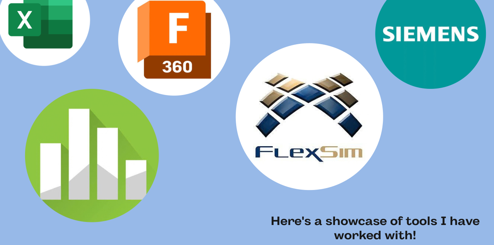

My Background
Industrial and Systems Engineering student at The University of Texas at El Paso (UTEP).
ABOUT ME
Curious about how processes, people, and systems work together—and how to make them better.
Industrial and Systems Engineering student at The University of Texas at El Paso (UTEP).
Process optimization, continuous improvement, operations, and systems.
Undergraduate Assistant II — The University of Texas at El Paso (2024–Present).
MY TOOLKIT
